Collet 1770: one consolidated review request
The processing attempt is complete. Review is optional for this provisional regional demonstration, but needed before stronger historical claims. Blue crosshairs are selected historical symbols; orange crosshairs are USGS GNIS town proxies on modern USGS maps. Views are independently centered, not evidence of alignment.
Edit review.csv: accept, reject or revise; preserve IDs and include a source and CRS for any correction. Original columns remain the baseline. Highest priorities: Bath and New Bern, followed by excluded Brunswick Town and Cross Creek. All 16 candidates are below. Do not infer the right correction from this experiment’s residuals.
These checks have now been inspected. Any revised model needs newly reserved independent checks; the old four become diagnostic data. Return to map. Historical evidence and source links.
P01 Salisbury — fit
Pixel: 4012, 3463. Reference longitude, latitude: -80.4742261, 35.6709727 (EPSG:4269); GNIS ID 994186.
Original town square/grid; approximate symbol center. GNIS place proxy and generalized town symbol may differ by hundreds of metres or kilometres; no exact colonial landmark established.
Decision requested: Accept or revise the town-symbol center and the GNIS town proxy for REGIONAL use. If revising, supply an independently sourced colonial-core coordinate, its CRS and citation. Do not move a point just to improve residuals.
P02 Hillsborough — fit
Pixel: 6438, 2538. Reference longitude, latitude: -79.0997348, 36.0754183 (EPSG:4269); GNIS ID 986830.
Town grid north of Eno River; approximate grid center. GNIS place proxy and generalized town symbol may differ by hundreds of metres or kilometres; no exact colonial landmark established.
Decision requested: Accept or revise the town-symbol center and the GNIS town proxy for REGIONAL use. If revising, supply an independently sourced colonial-core coordinate, its CRS and citation. Do not move a point just to improve residuals.
P03 Bethania — fit
Pixel: 4288, 2310. Reference longitude, latitude: -80.3381077, 36.1823602 (EPSG:4269); GNIS ID 1006108.
Bethania symbol, distinct from adjacent Bethabara and Salem. GNIS place proxy and generalized town symbol may differ by hundreds of metres or kilometres; no exact colonial landmark established.
Decision requested: Accept or revise the town-symbol center and the GNIS town proxy for REGIONAL use. If revising, supply an independently sourced colonial-core coordinate, its CRS and citation. Do not move a point just to improve residuals.
P04 Halifax — fit
Pixel: 9138, 2170. Reference longitude, latitude: -77.5894199, 36.328486 (EPSG:4269); GNIS ID 986304.
Town symbol on south/west side of Roanoke River. GNIS place proxy and generalized town symbol may differ by hundreds of metres or kilometres; no exact colonial landmark established.
Decision requested: Accept or revise the town-symbol center and the GNIS town proxy for REGIONAL use. If revising, supply an independently sourced colonial-core coordinate, its CRS and citation. Do not move a point just to improve residuals.
P05 Edenton — fit
Pixel: 10905, 2580. Reference longitude, latitude: -76.6077213, 36.057938 (EPSG:4269); GNIS ID 1025302.
Town grid on Albemarle Sound; not the label text. GNIS place proxy and generalized town symbol may differ by hundreds of metres or kilometres; no exact colonial landmark established.
Decision requested: Accept or revise the town-symbol center and the GNIS town proxy for REGIONAL use. If revising, supply an independently sourced colonial-core coordinate, its CRS and citation. Do not move a point just to improve residuals.
P06 New Bern — fit
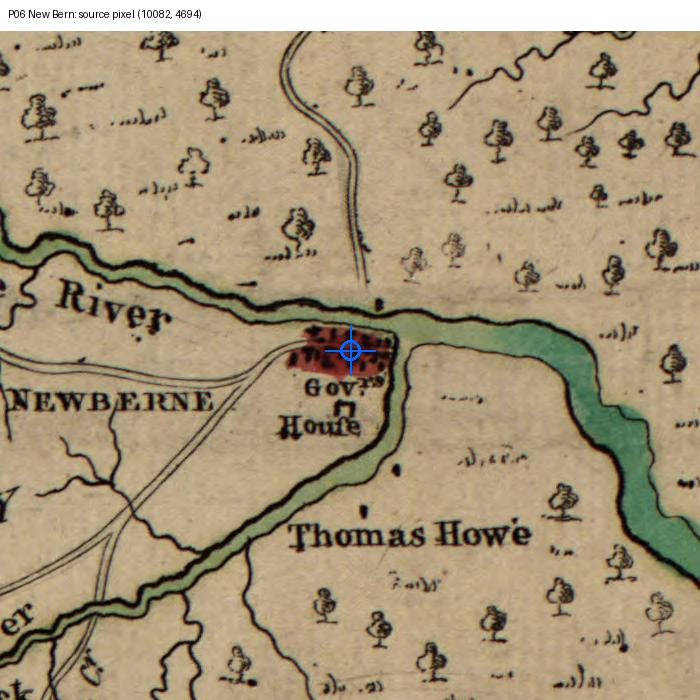
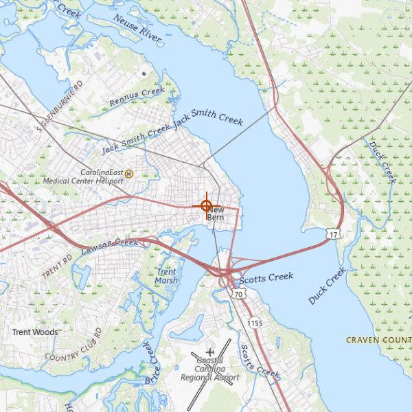
Pixel: 10082, 4694. Reference longitude, latitude: -77.0441143, 35.1084931 (EPSG:4269); GNIS ID 1013911.
Town grid at Trent/Neuse junction; NOT the Gov House label. GNIS place proxy and generalized town symbol may differ by hundreds of metres or kilometres; no exact colonial landmark established.
Decision requested: Accept or revise the town-symbol center and the GNIS town proxy for REGIONAL use. If revising, supply an independently sourced colonial-core coordinate, its CRS and citation. Do not move a point just to improve residuals.
P07 Beaufort — fit
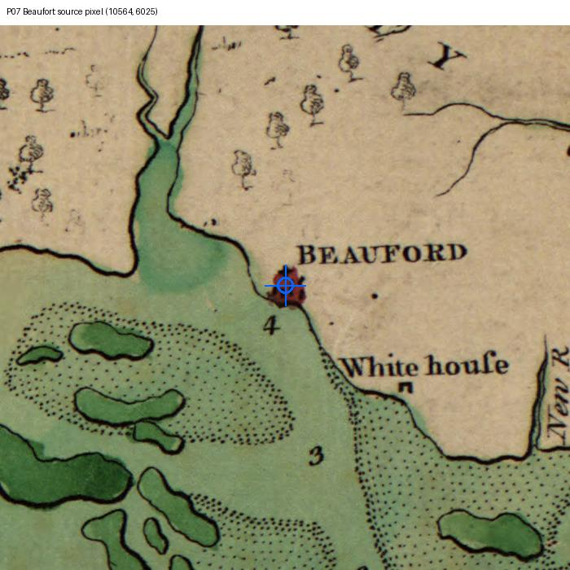
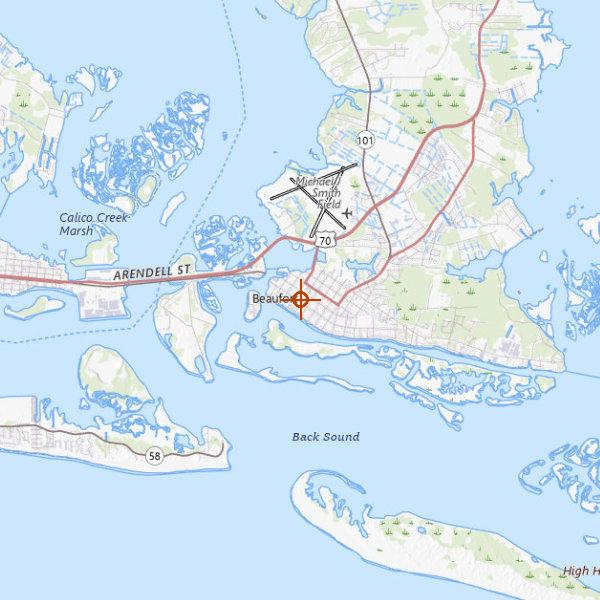
Pixel: 10564, 6025. Reference longitude, latitude: -76.6638186, 34.7182174 (EPSG:4269); GNIS ID 1019024.
Mainland town symbol; no inlet/shoreline point used. GNIS place proxy and generalized town symbol may differ by hundreds of metres or kilometres; no exact colonial landmark established.
Decision requested: Accept or revise the town-symbol center and the GNIS town proxy for REGIONAL use. If revising, supply an independently sourced colonial-core coordinate, its CRS and citation. Do not move a point just to improve residuals.
P08 Wilmington — fit
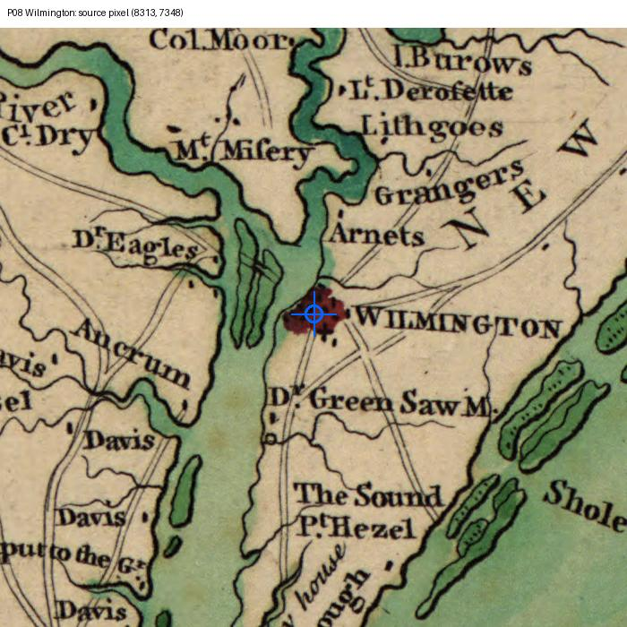
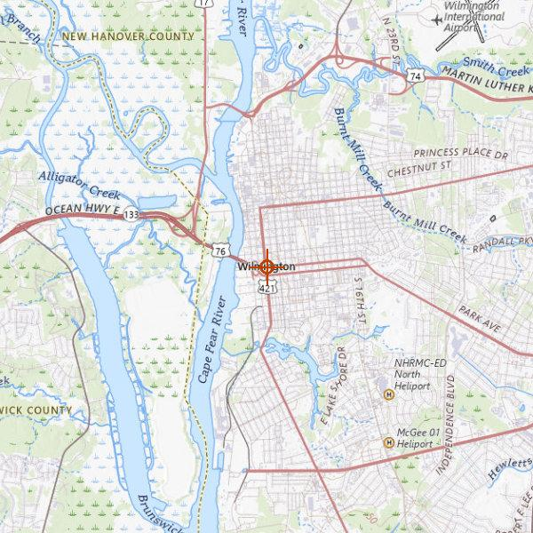
Pixel: 8313, 7348. Reference longitude, latitude: -77.9447102, 34.2257256 (EPSG:4269); GNIS ID 1023269.
Town symbol on east side of Cape Fear below branch junction. GNIS place proxy and generalized town symbol may differ by hundreds of metres or kilometres; no exact colonial landmark established.
Decision requested: Accept or revise the town-symbol center and the GNIS town proxy for REGIONAL use. If revising, supply an independently sourced colonial-core coordinate, its CRS and citation. Do not move a point just to improve residuals.
P09 Salem — check
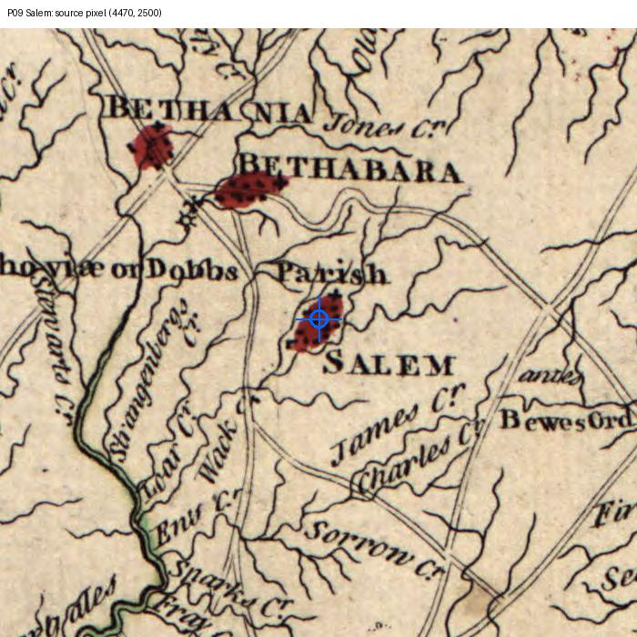
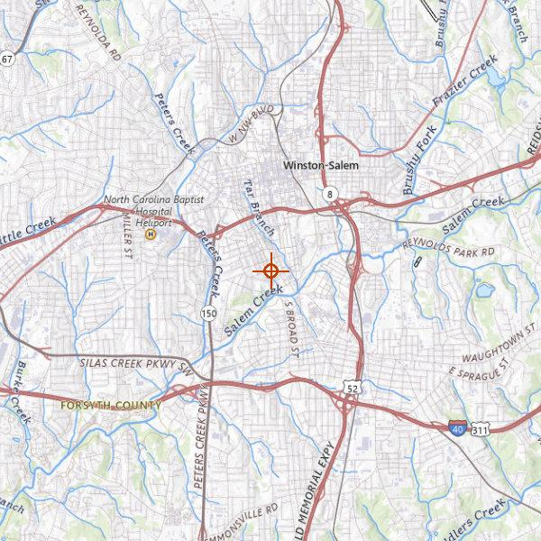
Pixel: 4470, 2500. Reference longitude, latitude: -80.2464384, 36.0837485 (EPSG:4269); GNIS ID 1022467.
Forsyth County Salem; not another same-name town or Winston-Salem centroid. GNIS place proxy and generalized town symbol may differ by hundreds of metres or kilometres; no exact colonial landmark established.
Decision requested: Accept or revise the town-symbol center and the GNIS town proxy for REGIONAL use. If revising, supply an independently sourced colonial-core coordinate, its CRS and citation. Do not move a point just to improve residuals.
P10 Tarboro — check
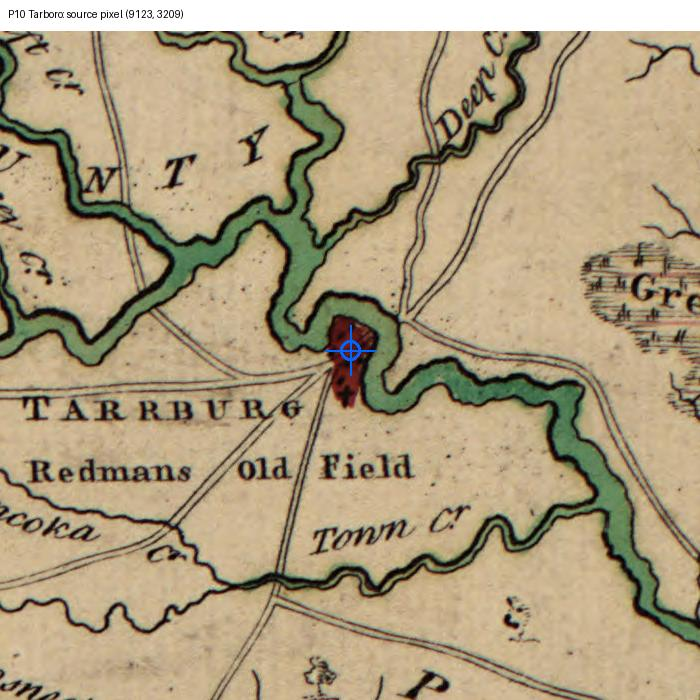
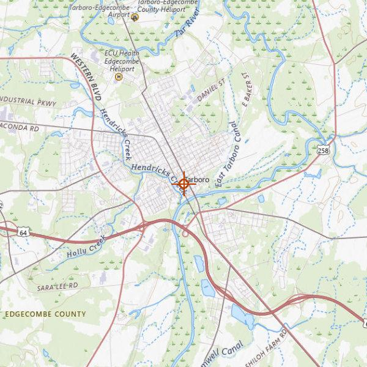
Pixel: 9123, 3209. Reference longitude, latitude: -77.5358049, 35.8968236 (EPSG:4269); GNIS ID 1022886.
Tarrburg symbol beside Tar River bend. GNIS place proxy and generalized town symbol may differ by hundreds of metres or kilometres; no exact colonial landmark established.
Decision requested: Accept or revise the town-symbol center and the GNIS town proxy for REGIONAL use. If revising, supply an independently sourced colonial-core coordinate, its CRS and citation. Do not move a point just to improve residuals.
P11 Hertford — check
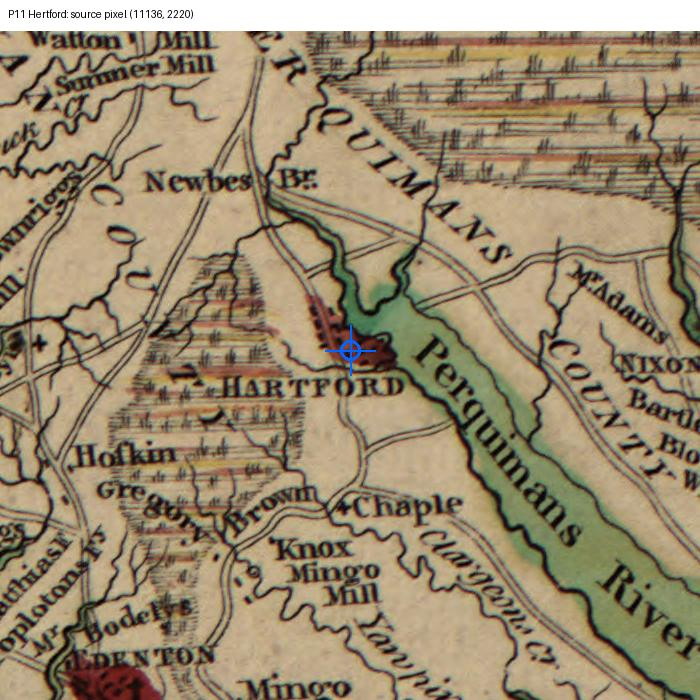
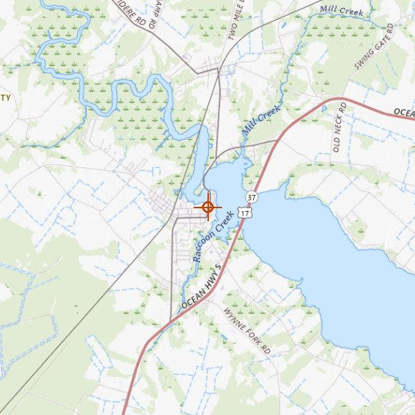
Pixel: 11136, 2220. Reference longitude, latitude: -76.4660519, 36.190158 (EPSG:4269); GNIS ID 1025382.
Hartpford symbol at Perquimans River; spelling variant. GNIS place proxy and generalized town symbol may differ by hundreds of metres or kilometres; no exact colonial landmark established.
Decision requested: Accept or revise the town-symbol center and the GNIS town proxy for REGIONAL use. If revising, supply an independently sourced colonial-core coordinate, its CRS and citation. Do not move a point just to improve residuals.
P12 Bath — check
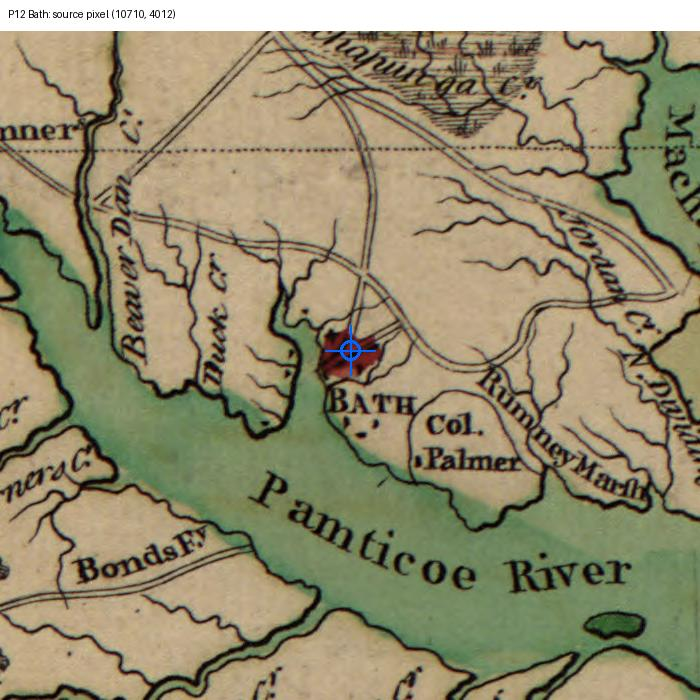
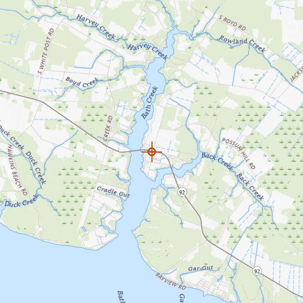
Pixel: 10710, 4012. Reference longitude, latitude: -76.8116045, 35.4771094 (EPSG:4269); GNIS ID 1018985.
Town symbol at Bath Creek; not modern shoreline vertex. GNIS place proxy and generalized town symbol may differ by hundreds of metres or kilometres; no exact colonial landmark established.
Decision requested: Accept or revise the town-symbol center and the GNIS town proxy for REGIONAL use. If revising, supply an independently sourced colonial-core coordinate, its CRS and citation. Do not move a point just to improve residuals.
P13 Nixonton — excluded
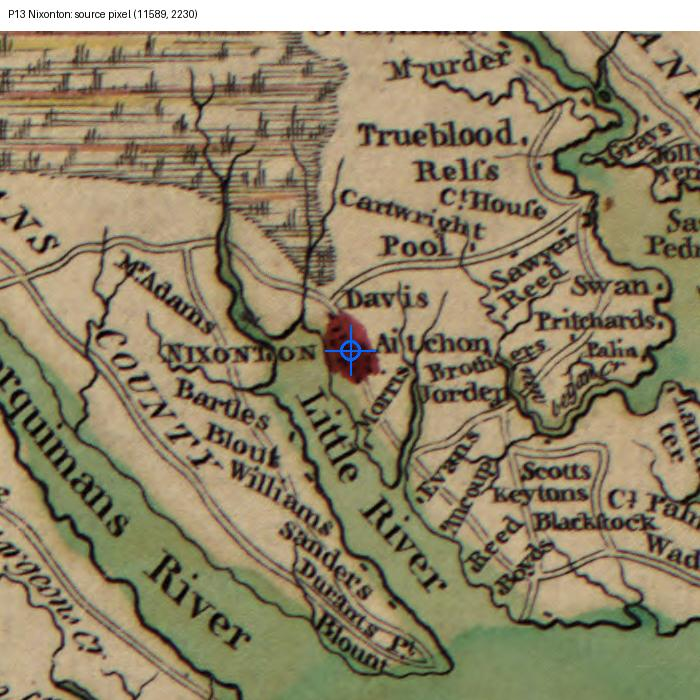
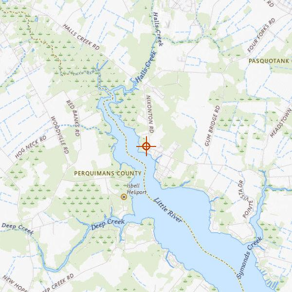
Pixel: 11589, 2230. Reference longitude, latitude: -76.2727126, 36.2007137 (EPSG:4269); GNIS ID 1025582.
Identifiable symbol, but colonial-core continuity not researched; northeast cluster already represented. GNIS place proxy and generalized town symbol may differ by hundreds of metres or kilometres; no exact colonial landmark established.
Decision requested: Does the Nixonton symbol refer to the same colonial core as the GNIS point? Supply independent historic evidence before admitting it.
P14 Brunswick Town — excluded
Pixel: 8094, 7810. Reference longitude, latitude: unresolved, unresolved (no CRS assigned); GNIS ID none.
Ruins potentially strong; modern Brunswick in Columbus County is a DIFFERENT place. Need archaeological town footprint coordinate. Ruins potentially strong; modern Brunswick in Columbus County is a DIFFERENT place. Need archaeological town footprint coordinate.
Decision requested: Locate the Brunswick Town archaeological footprint (not modern Brunswick), and determine whether a town-center or church anchor is defensible. Supply sourced coordinates and CRS.
P15 Cross Creek — excluded
Pixel: 6784, 4829. Reference longitude, latitude: unresolved, unresolved (no CRS assigned); GNIS ID none.
Cross Creek and Campbellton were distinct; modern Fayetteville point not accepted. Cross Creek and Campbellton were distinct; modern Fayetteville point not accepted.
Decision requested: Resolve Cross Creek versus Campbellton using a documented colonial plan; identify the represented town core and supply its coordinates and CRS.
P16 Haw–Deep river junction — excluded
Pixel: unresolved, unresolved. Reference longitude, latitude: unresolved, unresolved (no CRS assigned); GNIS ID none.
Potential natural anchor; exact channel junction and historical persistence not established. No coordinate guessed. Potential natural anchor; exact channel junction and historical persistence not established. No coordinate guessed.
Decision requested: Identify the Haw–Deep junction on the original image and a sourced modern channel junction; assess channel change or impoundment. Leave blank if uncertain.
Scan: Library of Congress, Geography and Map Division. Modern: USGS The National Map (full attribution in source metadata). GNIS coordinates: NAD83, EPSG:4269. No modern coordinate supplied for unresolved candidates.